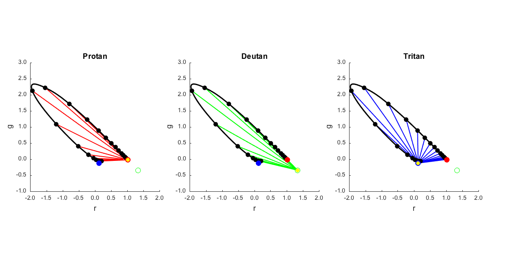
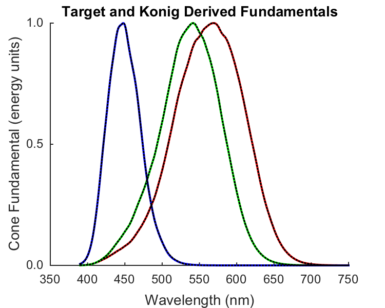

Contents
- Function implementing the isetbio validation code
- Hello
- Get and plot Stiles-Burch 10-degree color matching functions
- Get the cmf spectrum locus normalized to simplex
- Load Stockman-Sharpe 10-degree cone fundamentals
- Find the stimuli that isolate each of the cones.
- Find the cone sensitivity vectors in RGB tristimulus space.
- Get the cmf spectrum locus normalized to simplex (R + G + B = 1)
- Get the cone isolating dirs normalized to the simplex
- Get dichromatic confusion lines
- If we have measured the confusion lines, we can get the cone isolating directions.
- Plot spectrum locus and isolating vectors in the r-g chromaticity plane
- Use the recovered copunctal points to get the cones from the color matching functions
- Plot actual and derived cone fundamentals
- Save validation data
function varargout = cbColorMatching_KonigFundamentals(varargin) % % Illustrate the ideas underlying Konig fundamentals. % % Shows how to use dichromatic confusion data to estimate cone fundamentals % from color matching functions. This is done for Stiles-Burch 10 degree cmfs % and the Stockman-Sharpe 10 degree cone fundamentals, but the principles % would apply to any tristimulus system and cone fundamentals that % were a linear transfomration of the color matching functions. % % This routine isn't based on real data, the dichromatic confusion data are % syntehsized using the 'known' Stockman-Shapre cone fundamentals. What this % routine shows is how such data lock down the desired transformation. % % Note also that the Stockman-Sharpe fundamentals were not derived in this way, % data other than dichromatic confusion lines were broght to bear when % Stockman and Sharpe determined the transformation between the % Stiles-Burch cmfs and cone fundamentals. So this script is just % demonstrating how dichromatic confusion data are sufficient to derive a % set of cone fundamentals, and that when the confusion data correspond to % the fundamentals is all works correctly. % % See also cbColorMatching_StilesBurch10Cmfs. Indeed, understanding that % script is probably a prerequisit for understanding this one, as that % script goes through in more detail some of the calculations used in % passing here. % % (c) David Brainard and Andrew Stockman, 2015 varargout = UnitTest.runValidationRun(@ValidationFunction, nargout, varargin); end
Function implementing the isetbio validation code
function ValidationFunction(runTimeParams)
Hello
UnitTest.validationRecord('SIMPLE_MESSAGE', sprintf('%s',mfilename)); outputDir = sprintf('%s_Output',mfilename); if (~exist(outputDir,'dir')) mkdir(outputDir); end close all; drawnow;
Get and plot Stiles-Burch 10-degree color matching functions
Also spline to 1 nm and 10 nm sampling for plotting purposes.
load T_stiles10; data.wls = SToWls(S_stiles10); data.S_stiles10 = S_stiles10; data.T_stiles10 = T_stiles10; clear S_stiles10 T_stiles10 % These splines go from 390 to 750, which seems sufficient S_1nm = [390 1 361]; data.wls_1nm = SToWls(S_1nm); data.T_stiles10_1nm = SplineCmf(data.wls,data.T_stiles10,S_1nm); S_10nm = [390 10 37]; data.wls_10nm = SToWls(S_10nm); data.T_stiles10_10nm = SplineCmf(data.wls,data.T_stiles10,S_10nm);
Get the cmf spectrum locus normalized to simplex
for i = 1:size(data.T_stiles10_1nm,2); data.T_stiles10_1nm_simplex(:,i) = data.T_stiles10_1nm(:,i)/sum(data.T_stiles10_1nm(:,i)); end for i = 1:size(data.T_stiles10_10nm,2); data.T_stiles10_10nm_simplex(:,i) = data.T_stiles10_10nm(:,i)/sum(data.T_stiles10_10nm(:,i)); end
Load Stockman-Sharpe 10-degree cone fundamentals
load T_cones_ss10 data.T_cones10_1nm = SplineCmf(S_cones_ss10,T_cones_ss10,data.wls_1nm); % Fit with linear transform of cmf's, just to show that it works. data.M_CmfToCones = ((data.T_stiles10_1nm')\(data.T_cones10_1nm'))'; data.T_cones10_fit_1nm = data.M_CmfToCones*data.T_stiles10_1nm;
Find the stimuli that isolate each of the cones.
Get the isolating directions. We have the transformation for cmfs to cones spectral sensitivies. This is also the transformation between tristimulus coordinates and cone excitations. Invert this to get transformation between cone excitations and tristimulus coordinates. Then apply to the unit cone excitation vectors to get the cone isolating tristimulus vectors.
Make a normalized version of the vectors for plotting.
data.M_ConesToCmf = inv(data.M_CmfToCones); data.coneIsolatingRGBDirs = data.M_ConesToCmf*[[1 0 0]', [0 1 0]', [0 0 1]']; for i = 1:size(data.coneIsolatingRGBDirs,2) data.coneIsolatingRGBDirsNorm(:,i) = data.coneIsolatingRGBDirs(:,i)/norm(data.coneIsolatingRGBDirs(:,i)); end
Find the cone sensitivity vectors in RGB tristimulus space.
These are unit vectors such that when you project onto them, you get the L, M, and S responses. When we work in cone space, thesr are just the unit vectors, which are conceptually best expressed as row vectors, since then multiplying tristimulus coordinates from the left with such a vector directly gives cone excitation.
Since cone excitations themselves must be independent of the space we compute them in, we seek a row vector r such that r*t = u*c, where r is the response row vector in RGB, t is the tristimulus column vector, u is a unit row vector and c is a cone excitation column vector. We also have t = M*c with M being the M_ConesToCmf computed above. Thus we must have r = u*M_inv = u*M_CmfToCones. Note that r does not necessarily have unit length -- it is only in the cone excitation space where the response vectors are guaranteed to be the unit vectors and to have unit length.
Also produce normalized version for plotting.
data.coneResponseRGBVectors = [ [1 0 0] ; [0 1 0] ; [0 0 1] ]*data.M_CmfToCones; for i = 1:size(data.coneResponseRGBVectors,1) data.coneResponseRGBVectorsNorm(i,:) = data.coneResponseRGBVectors(i,:)/norm(data.coneResponseRGBVectors(i,:)); end
Get the cmf spectrum locus normalized to simplex (R + G + B = 1)
for i = 1:size(data.T_stiles10_1nm,2); data.T_stiles10_1nm_simplex(:,i) = data.T_stiles10_1nm(:,i)/sum(data.T_stiles10_1nm(:,i)); end for i = 1:size(data.T_stiles10_10nm,2); data.T_stiles10_10nm_simplex(:,i) = data.T_stiles10_10nm(:,i)/sum(data.T_stiles10_10nm(:,i)); end
Get the cone isolating dirs normalized to the simplex
for i = 1:size(data.coneIsolatingRGBDirs,2); data.coneIsolatingRGBDirs_simplex(:,i) = data.coneIsolatingRGBDirs(:,i)/sum(data.coneIsolatingRGBDirs(:,i)); end
Get dichromatic confusion lines
We can generate these by adding the cone isolating direction to to any stimulus. So let's add it to each stimulus on the spectrum locus.
These converge on the chromaticity of the isolating direction for each My intuition for this is that as you add more and more of the stimulus in the cone isolating direction, it dominates the tristimulus coordinates more and more, swamping whatever it was being added to. In the limit, then, the chromaticity of the summed stimulus will be that of the cone isolating stimulus.
To make these plot nicely, we chose a scale factor for each type of dichromat differently. For the M cone isolating direction, it's the negative excursion that intersects the simplex; plotting the confusion lines looks nicer if we use the negative rather than the positive excusion.
nConfusionLines = size(data.T_stiles10_10nm,2); for w = 1:3 switch (w) % Protanope case 1 whichConfusionColor = 'r'; confusionLineLengthFactor = 1; % Deuteranope case 2 whichConfusionColor = 'g'; confusionLineLengthFactor = -3; % Tritanope case 3 whichConfusionColor = 'b'; confusionLineLengthFactor = 30; end for i = 1:nConfusionLines; nConfusionPoints = 100; for j = 1:nConfusionPoints confusionLine{w,i}(:,j) = data.T_stiles10_10nm(:,i) + ... confusionLineLengthFactor*((j-1)/nConfusionPoints)*data.coneIsolatingRGBDirs(:,w); confusionLine_simplex{w,i}(:,j) = confusionLine{w,i}(:,j)/sum(confusionLine{w,i}(:,j)); end end end
If we have measured the confusion lines, we can get the cone isolating directions.
This is trivial in the case that we measure them in the full tristimulus space -- we just need to find the direction of the confusion line for any base stimulus and we have the isolating direction directly. As we'll show below, having the direction of the cone isolating stimulus for each cone class is enough to lock down the transformation from tristimulus coordinates to cone exciations, and this together with the color matching functions is enough to give us the cone fundamentals. There is a free scaling parameter left for each fundamental, that has to be locked down some other way.
What if we have just the chromaticities of several confusion lines for each type of dichromat? Then we can still do what we need. This isn't too hard, but is a little less trivial. We use the confusion lines for each type of dichromat to find where they intersect. This "copunctal point" gives us the chromaticity of the cone isolating directions, and from there we can get the tristimulus coordinates the cone isolating directions up to a free scale factor. Let's illustrate that.
We can express each confusion line as g = a*r+b. First step is to find a and b for each confusion line.
for w = 1:3 for i = 1:nConfusionLines; xData = [confusionLine_simplex{w,i}(1,:)' ones(nConfusionPoints,1)]; yData = confusionLine_simplex{w,i}(2,:)'; confusionLineFit{w}(:,i) = xData\yData; end end % With the fit to the set of lines, we can find the point where they % intersect. We re-express the set of equations as a linear system in % r,g, of the form -b = a*r - g for each fit line, and then solve for % r,g. The chromaticity plot shows these recovered points in yellow % for each type of dichromat, and they lie right over the actual % copunctal chromaticities. for w = 1:3 M = [confusionLineFit{w}(1,:)' -1*ones(nConfusionLines,1)]; negB = -confusionLineFit{w}(2,:)'; data.conpunctalPoint{w} = M\negB; end
Plot spectrum locus and isolating vectors in the r-g chromaticity plane
This includes a little empirical calculation of the gamut we can obtain with positive combinations of the isolating vectors. This is a bit non-intuitive, to me at least.
if (runTimeParams.generatePlots) [chromaticityFig,figParams] = cbFigInit; set(gcf,'Position',[100 254 1200 600]); figParams.xLimLow = -2; figParams.xLimHigh = 2; figParams.xTicks = [-2 -1.5 -1 -0.5 0 0.5 1 1.5 2]; figParams.xTickLabels = {'^{ }-2.0_{ }' '^{ }-1.5_{ }' '^{ }-1.0_{ }' '^{ }-0.5_{ }' '^{ }0.0_{ }' ... '^{ }0.5_{ }' '^{ }1.0_{ }' '^{ }1.5_{ }' '^{ }2.0_{ }'}; figParams.yLimLow = -1; figParams.yLimHigh = 3; figParams.yTicks = [-1 -0.5 0 0.5 1 1.5 2 2.5 3.0]; figParams.yTickLabels = {'^{ }-1.0_{ }' '^{ }-0.5_{ }' '^{ }0.0_{ }' ... '^{ }0.5_{ }' '^{ }1.0_{ }' '^{ }1.5_{ }' '^{ }2.0_{ }' '^{ }2.5_{ }' '^{ }3.0_{ }'}; % Montage plot of confusion lines for w = 1:3 chromSubplotHandle(w) = subplot_tight(1,3,w,0.06); hold on; % Plot the confusion lines switch (w) case 1 % Protanope whichConfusionColor = 'r'; titleStr = 'Protan'; case 2 % Deuteranope whichConfusionColor = 'g'; titleStr = 'Deutan'; case 3 % Tritanope titleStr = 'Tritan'; whichConfusionColor = 'b'; end for i = 1:size(data.T_stiles10_10nm,2); plot(confusionLine_simplex{w,i}(1,:),confusionLine_simplex{w,i}(2,:),whichConfusionColor,... 'LineWidth',figParams.lineWidth-figParams.subplotLineShrink); end % Plot the spectrum locus on the diagram along with equal energy white. plot(data.T_stiles10_1nm_simplex(1,:)',data.T_stiles10_1nm_simplex(2,:)', ... 'k','LineWidth',figParams.lineWidth-1); plot(data.T_stiles10_10nm_simplex(1,:)',data.T_stiles10_10nm_simplex(2,:)', ... 'ko','MarkerFaceColor','k','MarkerSize',figParams.markerSize-figParams.subplotMarkerShrink-2); % Plot where the cone isolating dirs lie on the diagram % % The M-cone chromaticity corresponds to the negative direction % of the primary, so it's plotted without a fill. plot([data.coneIsolatingRGBDirs_simplex(1,1)], ... [data.coneIsolatingRGBDirs_simplex(2,1)], ... 'ro','MarkerFaceColor','r','MarkerSize',figParams.markerSize-figParams.subplotMarkerShrink); plot([data.coneIsolatingRGBDirs_simplex(1,2)], ... [data.coneIsolatingRGBDirs_simplex(2,2)], ... 'go','MarkerSize',figParams.markerSize-figParams.subplotMarkerShrink); plot([data.coneIsolatingRGBDirs_simplex(1,3)], ... [data.coneIsolatingRGBDirs_simplex(2,3)], ... 'bo','MarkerFaceColor','b','MarkerSize',figParams.markerSize-figParams.subplotMarkerShrink); % Plot the recovered copunctal point plot(data.conpunctalPoint{w}(1),data.conpunctalPoint{w}(2), ... 'yo','MarkerFaceColor','y','MarkerSize',figParams.markerSize-figParams.subplotMarkerShrink-4); % Labels xlabel('r','FontSize',figParams.labelFontSize-figParams.subplotFontShrink); ylabel('g','FontSize',figParams.labelFontSize-figParams.subplotFontShrink); title(titleStr,'FontSize',figParams.titleFontSize-figParams.subplotFontShrink); axis('square'); cbFigAxisSet(chromSubplotHandle(w),figParams); set(gca,'FontName',figParams.fontName,'FontSize', ... figParams.axisFontSize-figParams.subplotFontShrink,'LineWidth',1); end % Save the figure FigureSave(fullfile(outputDir,[mfilename '_ConfusionLines_rgChrom']),chromaticityFig,figParams.figType); end
Use the recovered copunctal points to get the cones from the color matching functions
Notice that above we got the isolating directions using the following line of code: data.coneIsolatingRGBDirs = data.M_ConesToCmf*[[1 0 0]', [0 1 0]', [0 0 1]']; This means that data.coneIsolatingRGBDirs = data.M_ConesToCmf, the multiplication by the identity matrix was just there for conceptual clarity.
So if we convert the copunctal chromaticities to RGB with an arbitrary length and then treat that as an M_ConesToCmfs matrix, we can invert it to get an M_CmfsToCones matrix.
for w = 1:3 copunctalrgY = [data.conpunctalPoint{w} ; 1]; copunctalRGB(:,w) = xyYToXYZ(copunctalrgY); end data.M_CmfsToCones_copunctalDerived = inv(copunctalRGB); T_cones10_1nm_copunctalDerivedRaw = data.M_CmfsToCones_copunctalDerived*data.T_stiles10_1nm; % The scale of the recovered sensitivities is arbitrary and could even be % negative. Normalize so that peak of each one is 1. for w = 1:3 [~,index] = max(abs(T_cones10_1nm_copunctalDerivedRaw(w,:))); data.T_cones10_1nm_copunctalDerived(w,:) = T_cones10_1nm_copunctalDerivedRaw(w,:)/T_cones10_1nm_copunctalDerivedRaw(w,index(1)); end
Plot actual and derived cone fundamentals
if (runTimeParams.generatePlots) [stockmanSharpe10Fig,figParams] = cbFigInit; figParams.xLimLow = 350; figParams.xLimHigh = 750; figParams.xTicks = [350 400 450 500 550 600 650 700 750]; figParams.xTickLabels = {'^{ }350_{ }' '^{ }400_{ }' '^{ }450_{ }' '^{ }500_{ }' ... '^{ }550_{ }' '^{ }600_{ }' '^{ }650_{ }' '^{ }700_{ }' '^{ }750_{ }'}; figParams.yLimLow = 0; figParams.yLimHigh = 1; figParams.yTicks = [0 0.5 1]; figParams.yTickLabels = {' 0.0 ' ' 0.5 ' ' 1.0 '}; % Plot the fundamentals. plot(data.wls_1nm,data.T_cones10_1nm(1,:)','r','LineWidth',figParams.lineWidth); plot(data.wls_1nm,data.T_cones10_1nm(2,:)','g','LineWidth',figParams.lineWidth); plot(data.wls_1nm,data.T_cones10_1nm(3,:)','b','LineWidth',figParams.lineWidth); % Pop on top the fit derived from the simulated confusion lines. plot(data.wls_1nm,data.T_cones10_1nm_copunctalDerived(1,:)','k:','LineWidth',figParams.lineWidth-1); plot(data.wls_1nm,data.T_cones10_1nm_copunctalDerived(2,:)','k:','LineWidth',figParams.lineWidth-1); plot(data.wls_1nm,data.T_cones10_1nm_copunctalDerived(3,:)','k:','LineWidth',figParams.lineWidth-1); xlabel('Wavelength (nm)','FontSize',figParams.labelFontSize); ylabel('Cone Fundamental (energy units)','FontSize',figParams.labelFontSize); title('Target and Konig Derived Fundamentals','FontSize',figParams.titleFontSize); cbFigAxisSet(stockmanSharpe10Fig,figParams); % Save the figure FigureSave(fullfile(outputDir,[mfilename '_KonigDerivedConeFundamentals']),stockmanSharpe10Fig,figParams.figType); end
Save validation data
UnitTest.validationData('validateDataStruct', data);
end